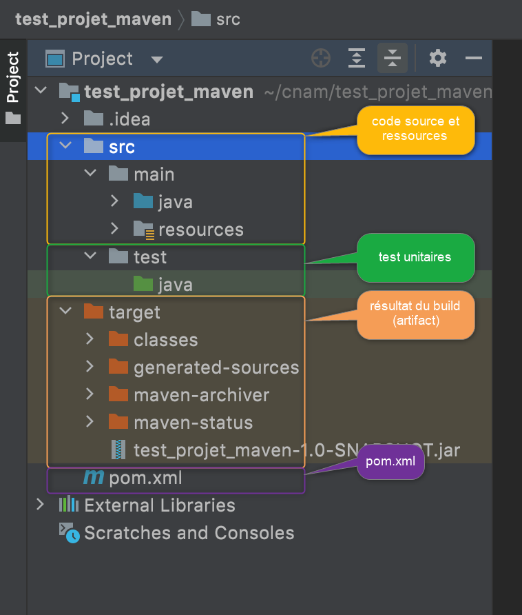

Langage JAVA
Gestion du cycle de vie des applications
Module INF330 - Programmation avancée
Gustavo BOBEFF
2021 - 2022
Problématique
"Le développement et déploiement des applications est devenu un vrai casse-tête"
- les causes?
- le nombre de dépendances sur de librairies externes à gérer
- mise à jour des versions
- gestion des conflits entre les librairies tiers
- tests unitaires
- automatisation d'exécution
- sécuriser la construction
- mise à disposition des livrables (application, librairies)
- multiplicité d'environnements
- configuration différente
- cycle de vie différente
- le nombre de dépendances sur de librairies externes à gérer
Solution?
Intégration Continue (CI) - Livraison continue (CD)

Infrastructure CI/CD : Forge logicielle
Configuration de la construction d'un projet
- Deux solutions sur le marché (les plus répandues)
- MAVEN : outil pour la gestion de projets
JAVA initialement mais il est aussi possible de l'utiliser sur de projets dans
autres langages (Ruby, C#, ...)
- Installation : https://maven.apache.org/install.html
- GRADEL : "un système d'automatisation de
la construction open source", en reprenant les meilleurs concepts d'Ant, Maven,
Ivy et Groovy
- Installation : https://gradle.org/install/
- MAVEN : outil pour la gestion de projets
JAVA initialement mais il est aussi possible de l'utiliser sur de projets dans
autres langages (Ruby, C#, ...)
Architecture
pom.xml
|
Structure d'un projet
Tâches (goals)
| Tâche | Fonction |
|---|---|
| validate | Valider les informations nécessaires à la génération du projet |
| compile | Compiler le code source du projet |
| test | Compiler et exécuter les tests unitaires automatisés. Ces tests ne doivent pas avoir besoin de la forme diffusable de l'artéfact ni de son déploiement dans un environnement |
| package | Générer l'artéfact sous sa forme diffusable (jar, war, ear, ...) |
| install | Installer l'artéfact dans le dépôt local pour qu'il puisse être utilisé comme dépendance d'autres projets |
| deploy | Déployer l'artéfact dans un environnement dédié et copier de l'artéfact dans le référentiel distant |
| ... |
bref ... quelques unes